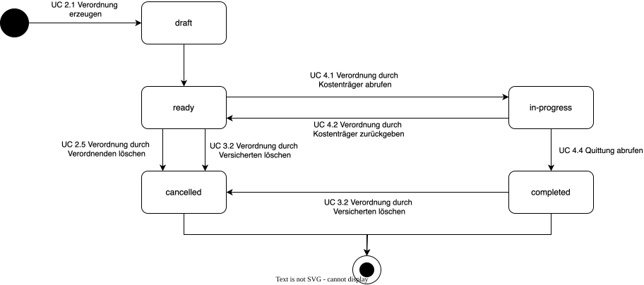
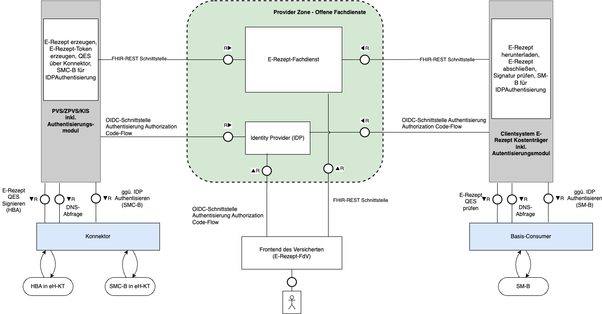

This fragment is not visible to the reader
This publication includes IP covered under the following statements.
| Type | Reference | Content |
|---|---|---|
| web | gematik.de |
IG © 2026+ gematik GmbH
. Paket de.gematik.tiflow.diga#2.0.0-ballot.2 basierend auf FHIR 4.0.1
. Generiert 2026-06-12
Links: Table of Contents | QA Report |
| web | fhir.kbv.de |
The codes SHALL be taken from For codes, see
https://fhir.kbv.de/ValueSet/KBV_VS_SFHIR_BMP_DOSIEREINHEIT
( required to https://fhir.kbv.de/ValueSet/KBV_VS_SFHIR_BMP_DOSIEREINHEIT
)
|
| web | fhir.kbv.de |
The codes SHALL be taken from https://fhir.kbv.de/ValueSet/KBV_VS_SFHIR_BMP_DOSIEREINHEIT
( required to https://fhir.kbv.de/ValueSet/KBV_VS_SFHIR_BMP_DOSIEREINHEIT
)
|
| web | fhir.kbv.de |
Menge des Medikaments pro Dosis Binding: https://fhir.kbv.de/ValueSet/KBV_VS_SFHIR_BMP_DOSIEREINHEIT ( required ) |
| web | fhir.kbv.de | https://fhir.kbv.de/ValueSet/KBV_VS_SFHIR_BMP_DOSIEREINHEIT |
| web | en.wikipedia.org | Both Bundle.link and Bundle.entry.link are defined to support providing additional context when Bundles are used (e.g. HATEOAS ). |
| web | gemspec.gematik.de | Diese Seite basiert auf der gleichnamigen Schnittstelle in der Core-Spezifikation und beschreibt den Einstieg in die Communication-Query-Schnittstelle. |
| web | gemspec.gematik.de | Diese Seite basiert auf der gleichnamigen Schnittstelle in der Core-Spezifikation und beschreibt den Einstieg in die Task-Query-Schnittstelle. |
|
diga-statusmodell.svg  |
|
systemueberblick-diga.png  |
|
tree-filter.png
|